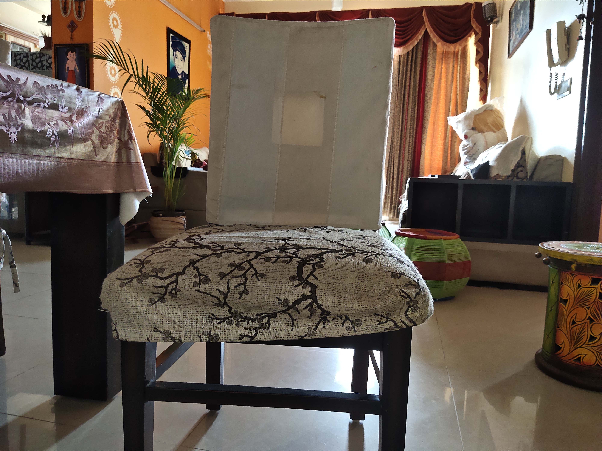

Case Study

a fabric surface
safety pin

a close up of a device
cassette
a pair of shoes
buckle

a chair in a room
loudspeaker, speaker, speaker unit, loudspeaker system, speaker system
a chair in a room
loudspeaker, speaker, speaker unit, loudspeaker system, speaker system
a silver bowl
cocktail shaker
a fabric surface
hook, claw

a close up of a rug
window screen
a close up of a computer
envelope
a close up of a fruit
snail

background pattern
window screen
I have tested 10 images and Microsoft Azure has predicted 4 of them incorrectly and MobileNet has predicted 10 of them incorrectly. 4 images are predicted incorrectly by both.So according to my case study, Microsoft Azure is more accurate.